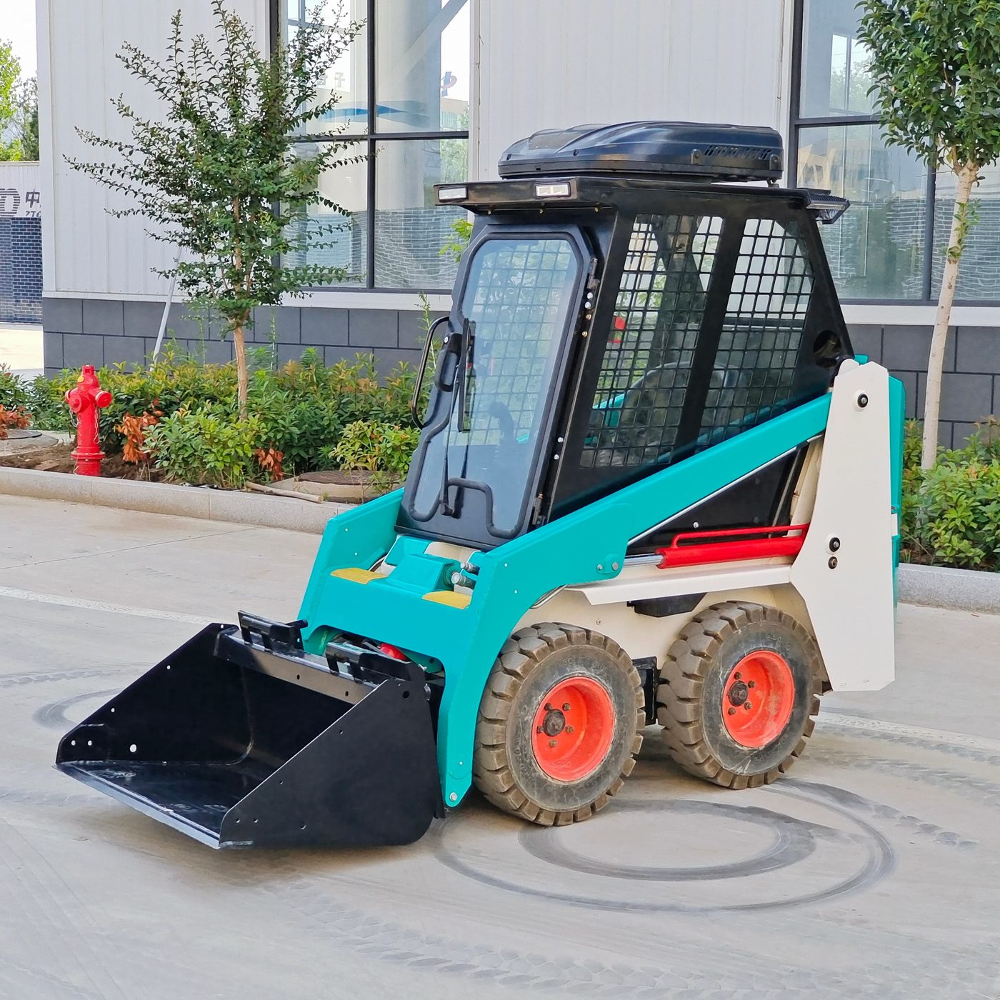
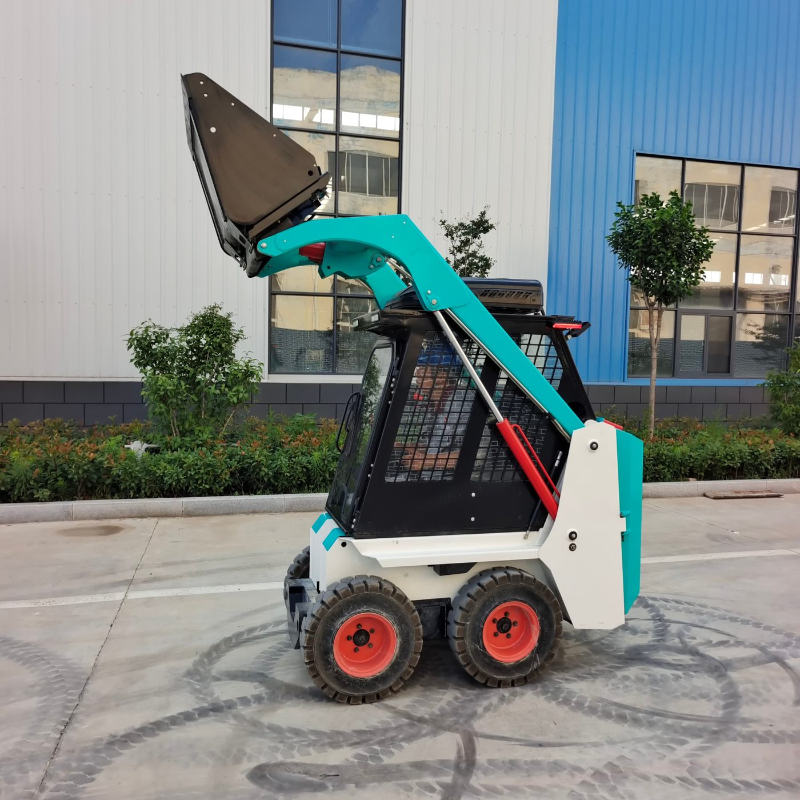

Электрический мини-погрузчик Longqing SW36E / SW36EP с бортовым поворотом
Официальный поставщик в России — ООО «ВИРА». Сертификация CE и EAC, гарантия 18 месяцев, отгрузка из Владивостока и доставка по всей России.


Электрический мини-погрузчик Longqing SW36E/SW36EP с бортовым поворотом — представитель погрузочной техники в каталоге Longqing. Номинальная грузоподъёмность — 362 кг (опрокидывающая нагрузка 724 кг), высота разгрузки со стандартным ковшом — 1934 мм, максимальная высота пальца ковша — 2406 мм, скорость — до 8,5 км/ч. Литиевая тяговая батарея 96В/217Ач обеспечивает работу без выхлопа: внутри складов, цехов, торговых центров и на закрытых площадках.
Ширина корпуса — всего 880 мм: погрузчик проходит в стандартные дверные проёмы и узкие проходы. Быстросъёмное крепление позволяет менять навесное оборудование за минуты — ковш, щётку, отвал и другие рабочие органы. Вес машины — 1312 кг, дорожный просвет — 150 мм, угол съезда — 25°. Ниже — полная таблица из 29 технических параметров.
Модельный ряд — 2 модели
- SW36E — грузоподъёмность 362 кг, Li-ion АКБ 96В/217Ач, скорость 8,5 км/ч, высота разгрузки 1934 мм, ширина 880 мм, вес 1312 кг
- SW36EP — грузоподъёмность 362 кг, Li-ion АКБ 96В/217Ач, скорость 8,5 км/ч, высота разгрузки 1934 мм, ширина 880 мм, вес 1312 кг
Особенности и системы безопасности
- Защита от случайных операций с рабочей платформы
- Ремень безопасности
- Механическое растормаживание ходового тормоза
- Передние и задние рабочие фонари
- Камера заднего вида + звуковой сигнал заднего хода
- Сигнализация неисправностей
- Быстросъёмное крепление навесного оборудования
- Необслуживаемая цепная коробка передач
- Передний гидравлический вывод для навесного оборудования
- Заднее окно кабины
- Прямой привод от электродвигателя
- Гидравлическое пропорциональное управление движением
- Электрическое управление всеми исполнительными механизмами
- Цельнолитые шины
- Кондиционер (опция)
- Герметичная кабина (опция)
Технические характеристики
Полные заводские параметры по каждой модели серии. Цену и срок поставки уточняйте у ООО «ВИРА» — +7 (423) 256-47-21.
| Параметр | SW36E / SW36EP |
|---|---|
| Максимальная рабочая высота | 3051 мм |
| Высота кабины (по крыше) | 1825 мм |
| Угол съезда | 25° |
| Дорожный просвет | 150 мм |
| Колесная база | 722 мм |
| Длина (без ковша) | 2018 мм |
| Длина (со стандартным ковшом) | 2722 мм |
| Максимальный угол запрокидывания ковша на ровной площадке | 22° |
| Высота разгрузки (со стандартным ковшом) | 1934 мм |
| Максимальная высота пальца ковша | 2406 мм |
| Вылет при максимальной высоте разгрузки | 665 мм |
| Угол разгрузки на максимальной высоте | 12° |
| Угол опрокидывания ковша на максимальной высоте | 84° |
| Ширина стандартного ковша | 948 мм |
| Радиус поворота (со стандартным ковшом) | 1575 мм |
| Колея | 960 мм |
| Ширина корпуса | 880 мм |
| Опрокидывающая нагрузка | 724 кг |
| Номинальная грузоподъемность | 362 кг |
| Производительность гидронасоса | 37 л/мин |
| Давление в быстроразъемном соединении | 20,7 МПа |
| Максимальная скорость движения | 8,5 км/ч |
| Преодолеваемый уклон | 30% (0,3) |
| Аккумуляторная батарея | 96В/217Ач (литиевая) |
| Рабочее напряжение | 12В DC |
| Бак гидравлической системы | 16 л |
| Вес | 1312 кг |
| Мощность двигателя | 9,5 кВт |
| Мощность (в лошадиных силах) | номинальная 13 л.с. / максимальная 34 л.с. |
Частые вопросы о технике Longqing
Какую нагрузку поднимает мини-погрузчик SW36E?
Номинальная грузоподъёмность — 362 кг, опрокидывающая нагрузка — 724 кг. Высота разгрузки со стандартным ковшом — 1934 мм, вылет на максимальной высоте — 665 мм, угол разгрузки — 12°.
Какая батарея и скорость у SW36E/SW36EP?
Литиевая тяговая батарея 96В/217Ач, скорость до 8,5 км/ч. Электропривод означает нулевой выброс: погрузчик работает внутри складов, цехов и торговых центров.
Какое навесное оборудование подходит?
Быстросъёмное крепление позволяет менять рабочие органы: стандартный ковш 948 мм, щётка, отвал и другое оборудование. Ширина корпуса 880 мм даёт работать в стеснённых пространствах — проходах, между стеллажами, в дверных проёмах.
Подберём модель под вашу задачу
Расскажите об объекте, высоте и условиях работ — предложим подходящую модель Longqing, рассчитаем доставку из Владивостока в ваш регион.